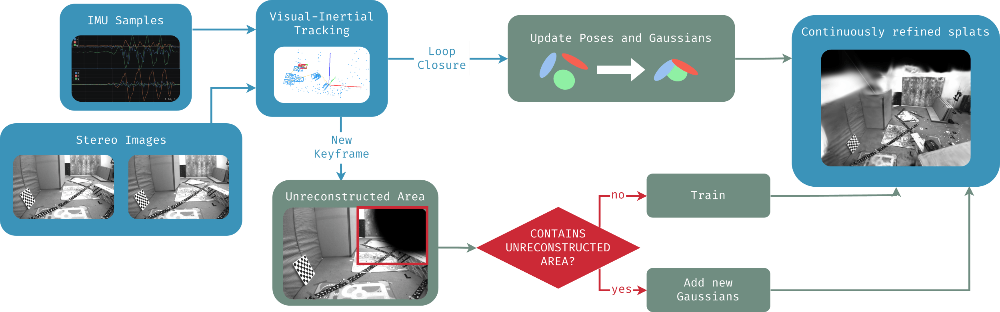
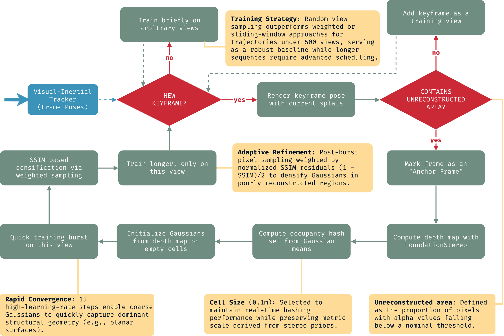

Abstract
3D Gaussian Splatting (3DGS) provides efficient rendering of photo-realistic scenes, but its heavy preprocessing and training steps make it a poor fit for applications that require real-time reconstruction in robotics or XR. This capability is important since it allows immediate feedback and interaction with new environments. Visual-inertial odometry (VIO) and simultaneous localization and mapping (VI-SLAM) systems, on the other hand, specifically target real-time applications, which makes them a good choice for integration with 3DGS.
We propose a new method that tracks and reconstructs simultaneously in real-time by leveraging an efficient visual-inertial tracking system based on Basalt together with a novel incremental method built on top of Brush, an efficient Rust-based GPU-vendor-agnostic implementation of 3D Gaussian Splatting. We show that many of the heavy preprocessing and training steps of 3DGS can be replaced with a more efficient incremental training strategy that has direct access to the information generated by the visual-inertial tracking system. Furthermore, we propose and combine multiple practical improvements to increase the efficiency of the training pipeline and adapt it to run in real-time, parallel to the tracking thread. This work highlights the value of exploiting the complementary nature of SLAM and 3DGS, and how that can lead to promising results for real-time 3D reconstruction.
What's new
One real-time pipeline
Stereo images and IMU in; camera poses and a live 3DGS map out. Tracking and splatting run on separate threads and the SLAM thread never blocks on training.
Anchor frames only
Gaussians are seeded exclusively from keyframes whose render still shows unreconstructed area (~10% of keyframes), confining the ~150 ms stereo-depth step to a fraction of frames.
Occupancy + SSIM densification
Candidates are back-projected from metric depth, pruned against a 0.1 m occupancy grid, then densified precisely where per-pixel SSIM says the render disagrees with the image.
Loop closure for free
Pose-graph corrections from the tracker are applied as a rigid transform to each anchor frame's contiguous block of Gaussians, a simple sequential update.
No CUDA lock-in
Built on Brush (Rust + CubeCL) with BM and SGBM-WLS stereo fallbacks alongside FoundationStereo, so the pipeline runs on non-CUDA GPUs.
Highest stereo tracking FPS
2–3× the tracking frame rate of Photo-SLAM and CaRtGS across EuRoC and the Monado SLAM Dataset, while matching or beating their reconstruction quality on most sequences.
Videos
EuRoC Vicon Room. Incremental reconstruction on a standard VI-SLAM benchmark sequence.
XREAL live demo. Real-time reconstruction running from an XR headset's sensors.
DepthAI live demo. Live tracking and splatting from a stereo-inertial camera.
Method
Basalt tracks every incoming stereo-inertial frame; images are undistorted and stereo-rectified with OpenCV. Gaussians are only ever created from Basalt keyframes. Before a keyframe is committed, the current map is rendered from its pose and scored for coverage: if the fraction of pixels with alpha below 0.05 exceeds a threshold, the keyframe becomes an anchor frame, it gets a stereo depth map and seeds new Gaussians. Otherwise it simply joins the pool of views used for ongoing optimization. Because stereo depth (FoundationStereo by default, BM / SGBM-WLS as fallbacks) is the pipeline's main bottleneck at ~150 ms per call, restricting it to the ~10% of keyframes that are anchor frames is what keeps the system real-time.

Adding Gaussians from an anchor frame
1. Depth-based seeding. A metric depth map is back-projected with the known intrinsics and the anchor pose into a dense set of candidate Gaussian means. 2. Occupancy pruning. Candidates that fall in already-reconstructed regions are discarded using a CPU-side occupancy hashset over a 0.1 m uniform grid. 3. Burst fit. A short high-learning-rate optimization burst on the new anchor view alone shows how well the sparse seed already explains the image. 4. SSIM-based densification. Per-pixel SSIM between the rendered and observed anchor view drives how many Gaussians to add, n_add = MAX_SAMPLES · (1 − mean SSIM) / 2, sampled at locations weighted by 1 − SSIM, so densification targets exactly the small, badly reconstructed regions. 5. Convergence. A longer training interval on the anchor view lets the new Gaussians settle.
Loss
The total loss combines the original 3DGS L1 and SSIM terms with an inverse-depth L1 term on anchor views, an anti-needle regularizer that pushes covariances toward isotropy (highly anisotropic Gaussians near the reconstruction border otherwise make the render foggy), and a scale regularizer that penalizes over-large Gaussians, introduced to curb a subset of Gaussians exploding in size on the EuRoC Machine Hall sequences.
Loop closure
Loop detection and pose-graph correction are handled entirely by the visual-inertial tracker. When a correction arrives, every keyframe's stored pose is updated. Only anchor frames own Gaussians, so only their Gaussians receive a geometric update: the same rigid transform applied to the anchor pose translates each Gaussian's mean and rotates its covariance. Keeping every anchor frame's Gaussians contiguous in memory makes this a simple sequential operation.

Results
Evaluated on EuRoC and the Monado SLAM Dataset (MSD), best of 3 runs per method at equal running time, on a Ryzen 9 9950X with an RTX 5060 Ti (16 GiB). Tracking accuracy (ATE/RTE) is governed entirely by the underlying tracker and is not reported here.
| Method | PSNR ↑ | SSIM ↑ | LPIPS ↓ | Track FPS ↑ | #Splats ↓ | GPU GB ↓ |
|---|---|---|---|---|---|---|
| Photo-SLAM | 20.22 | 0.78 | 0.48 | 72 | 228k | 2.8 |
| CaRtGS | 22.41 | 0.82 | 0.45 | 69 | 65k | 2.6 |
| Stipple (ours) | 23.49 | 0.86 | 0.39 | 211 | 82k | 2.9 |
| Method | PSNR ↑ | SSIM ↑ | LPIPS ↓ | Track FPS ↑ | #Splats ↓ | GPU GB ↓ |
|---|---|---|---|---|---|---|
| Photo-SLAM | 27.29 | 0.95 | 0.38 | 51 | 57k | 7.6 |
| CaRtGS | 27.29 | 0.95 | 0.39 | 46 | 6k | 7.0 |
| Stipple (ours) | 28.30 | 0.95 | 0.36 | 146 | 47k | 2.8 |
Across the MSD headsets, Stipple attains the best average PSNR, LPIPS and tracking FPS at roughly a third of the peak GPU memory of either baseline, and is the only method to complete several sequences, all four HP Reverb G2 (MGO) scenes and every Samsung Odyssey+ (MOO) scene, where Photo-SLAM and CaRtGS fail to produce a usable result.
The one regression. On EuRoC Machine Hall, CaRtGS leads on PSNR/SSIM (21.80 / 0.76 vs. our 19.48 / 0.70). The SSIM-based densification criterion over-triggers there, adding far more Gaussians (394k vs. 118k) than the real-time budget can converge; the scale-regularization loss partially compensates but does not close the gap. We treat this as a stop-gap rather than a solution and leave a principled fix, a densification budget or an improved occupancy criterion, to future work.
Citation
@article{northoff2026stipple,
title = {Stipple: Real-Time Incremental Gaussian Splatting with Visual-Inertial Tracking},
author = {Northoff, Kilian and de Mayo, Mateo and Cremers, Daniel},
journal = {arXiv preprint arXiv:2508.00088},
year = {2026}
}
Acknowledgements
Supported by the European Research Council (ERC) Advanced Grant SIMULACRON, by the DFG project CR 250/26-1 “4D-YouTube”, by the GNI Project “AI4Twinning”, and by the Munich Center for Machine Learning.